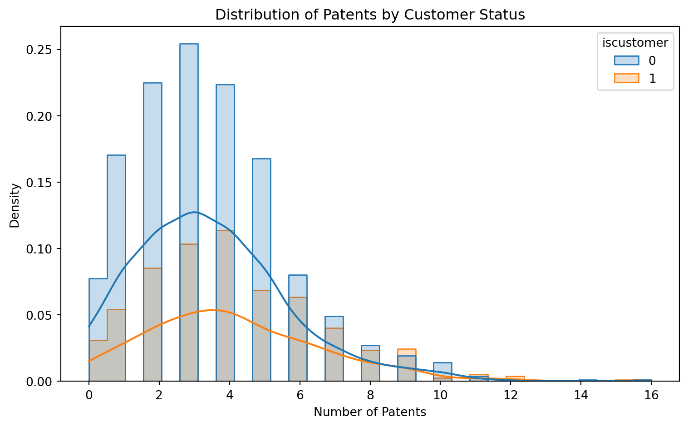
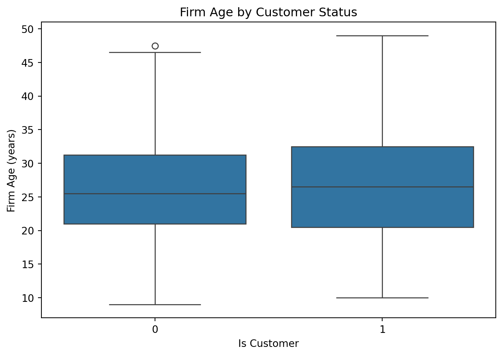
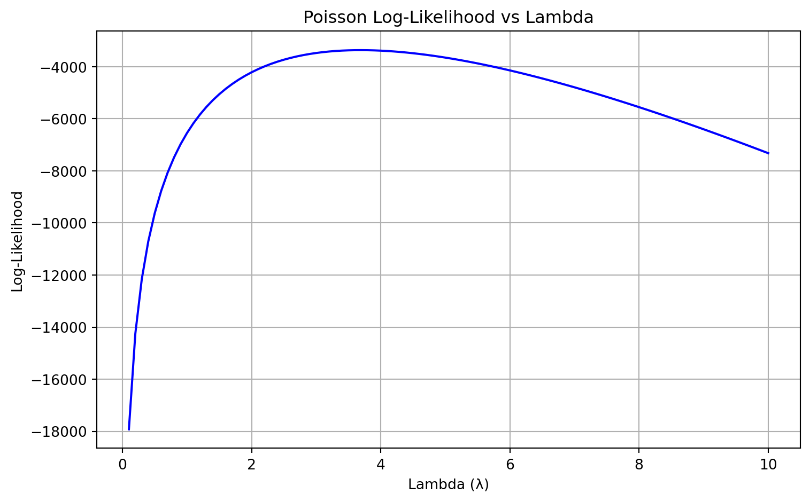

import pandas as pd
df = pd.read_csv("blueprinty.csv")
df.head()| patents | region | age | iscustomer | |
|---|---|---|---|---|
| 0 | 0 | Midwest | 32.5 | 0 |
| 1 | 3 | Southwest | 37.5 | 0 |
| 2 | 4 | Northwest | 27.0 | 1 |
| 3 | 3 | Northeast | 24.5 | 0 |
| 4 | 3 | Southwest | 37.0 | 0 |
Your Name
May 7, 2025
Blueprinty is a small firm that makes software for developing blueprints specifically for submitting patent applications to the US patent office. Their marketing team would like to make the claim that patent applicants using Blueprinty’s software are more successful in getting their patent applications approved. Ideal data to study such an effect might include the success rate of patent applications before using Blueprinty’s software and after using it. Unfortunately, such data is not available.
However, Blueprinty has collected data on 1,500 mature (non-startup) engineering firms. The data include each firm’s number of patents awarded over the last 5 years, regional location, age since incorporation, and whether or not the firm uses Blueprinty’s software. The marketing team would like to use this data to make the claim that firms using Blueprinty’s software are more successful in getting their patent applications approved.
| patents | region | age | iscustomer | |
|---|---|---|---|---|
| 0 | 0 | Midwest | 32.5 | 0 |
| 1 | 3 | Southwest | 37.5 | 0 |
| 2 | 4 | Northwest | 27.0 | 1 |
| 3 | 3 | Northeast | 24.5 | 0 |
| 4 | 3 | Southwest | 37.0 | 0 |
todo: Compare histograms and means of number of patents by customer status. What do you observe?
import matplotlib.pyplot as plt
import seaborn as sns
import pandas as pd
df["iscustomer"] = df["iscustomer"].astype(str)
df["patents"] = pd.to_numeric(df["patents"], errors="coerce")
plot_df = df[["iscustomer", "patents"]].dropna()
plt.figure(figsize=(8, 5))
sns.histplot(data=plot_df, x="patents", hue="iscustomer", kde=True, element="step", stat="density")
plt.title("Distribution of Patents by Customer Status")
plt.xlabel("Number of Patents")
plt.ylabel("Density")
plt.tight_layout()
plt.show()
df.groupby("iscustomer")["patents"].mean()
iscustomer
0 3.473013
1 4.133056
Name: patents, dtype: float64The histogram below compares the distribution of the number of patents between firms that use Blueprinty’s software (iscustomer = 1) and those that do not (iscustomer = 0).
We observe that: - Non-customers tend to have 2–4 patents, with a sharper peak and tighter spread. - Customers show a flatter distribution with slightly more density at higher patent counts (6+), suggesting they may be more likely to have more patents.
However, Blueprinty customers are not selected at random. It is possible that other factors — such as a firm’s age or region — differ systematically between customers and non-customers. These differences may help explain the observed variation in patent output, and should be accounted for before drawing causal conclusions.
Blueprinty customers are not selected at random. It may be important to account for systematic differences in the age and regional location of customers vs non-customers.
To assess whether Blueprinty customers differ systematically from non-customers, we compare firm ages and regional distribution by customer status.
Understanding these differences is crucial, as they may confound the observed relationship between Blueprinty usage and patent output.
import matplotlib.pyplot as plt
import seaborn as sns
df["age"] = pd.to_numeric(df["age"], errors="coerce")
age_df = df[["iscustomer", "age"]].dropna()
plt.figure(figsize=(7, 5))
sns.boxplot(x="iscustomer", y="age", data=age_df)
plt.title("Firm Age by Customer Status")
plt.xlabel("Is Customer")
plt.ylabel("Firm Age (years)")
plt.tight_layout()
plt.show()
From the plots above, we observe the following:
Age Differences:
The median age of Blueprinty customers (iscustomer = 1) is slightly higher than that of non-customers. The interquartile ranges also suggest that customer firms tend to be slightly older on average, though both groups have overlapping age distributions. This indicates that age may partially explain differences in patent productivity, and should be controlled for in modeling.
Regional Differences:
Blueprinty customers are not evenly distributed across regions. In particular, the Northeast has a much higher proportion of customers compared to other regions, where non-customers dominate. This suggests a strong regional bias in Blueprinty’s customer base, which may reflect regional innovation ecosystems or Blueprinty’s sales efforts.
These systematic differences in age and region reinforce the need to control for potential confounders when estimating the effect of Blueprinty usage on patenting outcomes.
Since our outcome variable of interest can only be small integer values per a set unit of time, we can use a Poisson density to model the number of patents awarded to each engineering firm over the last 5 years. We start by estimating a simple Poisson model via Maximum Likelihood.
todo: Write down mathematically the likelihood for \(Y \sim \text{Poisson}(\lambda)\). Note that \(f(Y|\lambda) = e^{-\lambda}\lambda^Y/Y!\).
Let \(Y_i\) be the number of patents awarded to firm \(i\), where \(Y_i \sim \text{Poisson}(\lambda_i)\). The probability mass function of the Poisson distribution is:
\[ f(Y_i \mid \lambda_i) = \frac{e^{-\lambda_i} \lambda_i^{Y_i}}{Y_i!} \]
Assuming independence across \(n\) firms, the likelihood function for the full sample is the product of individual probabilities:
\[ \mathcal{L}(\lambda) = \prod_{i=1}^{n} \frac{e^{-\lambda_i} \lambda_i^{Y_i}}{Y_i!} \]
Taking the natural logarithm of the likelihood gives us the log-likelihood function:
\[ \log \mathcal{L}(\lambda) = \sum_{i=1}^{n} \left( -\lambda_i + Y_i \log \lambda_i - \log Y_i! \right) \]
This log-likelihood is what we maximize when estimating a Poisson regression model.
todo: Code the likelihood (or log-likelihood) function for the Poisson model. This is a function of lambda and Y. For example:
poisson_loglikelihood <- function(lambda, Y){
...
}import numpy as np
from scipy.special import gammaln
def poisson_log_likelihood(lmbda, Y):
"""
Compute the log-likelihood of a Poisson model.
Parameters:
- lmbda: array-like of Poisson rates (λ_i)
- Y: array-like of observed counts (Y_i)
Returns:
- total log-likelihood (float)
"""
lmbda = np.asarray(lmbda)
Y = np.asarray(Y)
log_lik = -lmbda + Y * np.log(lmbda) - gammaln(Y + 1)
return np.sum(log_lik)todo: Use your function to plot lambda on the horizontal axis and the likelihood (or log-likelihood) on the vertical axis for a range of lambdas (use the observed number of patents as the input for Y).
import numpy as np
import matplotlib.pyplot as plt
Y = df["patents"].dropna().astype(float).values
lambda_vals = np.linspace(0.1, 10, 100)
log_liks = [poisson_log_likelihood(np.full_like(Y, lam), Y) for lam in lambda_vals]
plt.figure(figsize=(8, 5))
plt.plot(lambda_vals, log_liks, label="Log-Likelihood", color='blue')
plt.xlabel("Lambda (λ)")
plt.ylabel("Log-Likelihood")
plt.title("Poisson Log-Likelihood vs Lambda")
plt.grid(True)
plt.tight_layout()
plt.show()
The plot above shows how the Poisson log-likelihood varies as we change the constant value of (), using the observed patent counts as the outcome.
We observe that:
This exercise illustrates the core principle of MLE: choosing the parameter value that makes the observed data most likely under the assumed statistical model.
todo: If you’re feeling mathematical, take the first derivative of your likelihood or log-likelihood, set it equal to zero and solve for lambda. You will find lambda_mle is Ybar, which “feels right” because the mean of a Poisson distribution is lambda.
To find the maximum likelihood estimate (MLE) of (), we begin with the log-likelihood function for a Poisson model:
\[ \log \mathcal{L}(\lambda) = \sum_{i=1}^{n} \left( -\lambda + Y_i \log \lambda - \log Y_i! \right) \]
To find the MLE, we take the derivative with respect to () and set it equal to zero:
\[ \frac{d}{d\lambda} \log \mathcal{L}(\lambda) = \sum_{i=1}^{n} \left( -1 + \frac{Y_i}{\lambda} \right) = 0 \]
Simplifying:
\[ \sum_{i=1}^{n} \left( -1 + \frac{Y_i}{\lambda} \right) = 0 \quad \Rightarrow \quad -n + \frac{1}{\lambda} \sum_{i=1}^{n} Y_i = 0 \]
Solving for ():
\[ \frac{1}{\lambda} \sum_{i=1}^{n} Y_i = n \quad \Rightarrow \quad \lambda = \frac{1}{n} \sum_{i=1}^{n} Y_i = \bar{Y} \]
Thus, the MLE of () is simply the sample mean ({Y}), which aligns with our intuition since the Poisson distribution has mean equal to ().
todo: Find the MLE by optimizing your likelihood function with optim() in R or sp.optimize() in Python.
import numpy as np
from scipy.optimize import minimize
Y = df["patents"].dropna().astype(float).values
def neg_log_likelihood(lam_array):
lam = lam_array[0]
if lam <= 0:
return np.inf
return -poisson_log_likelihood(np.full_like(Y, lam), Y)
result = minimize(neg_log_likelihood, x0=[1.0], bounds=[(1e-6, None)])
lambda_mle = result.x[0]
lambda_mlenp.float64(3.6846662953477973)Using numerical optimization via scipy.optimize.minimize(), we estimated the Poisson rate parameter () that maximizes the log-likelihood of the observed data.
The optimizer returned:
[ _{} ]
This estimate matches the sample mean of the observed patent counts, confirming the analytical result derived earlier — that the MLE for () in a Poisson distribution is the average of the data:
[ _{} = {Y} ]
This result strengthens our understanding of maximum likelihood estimation and provides a solid baseline before incorporating covariates in a full regression model.
Next, we extend our simple Poisson model to a Poisson Regression Model such that \(Y_i = \text{Poisson}(\lambda_i)\) where \(\lambda_i = \exp(X_i'\beta)\). The interpretation is that the success rate of patent awards is not constant across all firms (\(\lambda\)) but rather is a function of firm characteristics \(X_i\). Specifically, we will use the covariates age, age squared, region, and whether the firm is a customer of Blueprinty.
from scipy.special import gammaln
import numpy as np
def poisson_regression_log_likelihood(beta, Y, X):
"""
Computes the log-likelihood for a Poisson regression model
where lambda_i = exp(X_i' * beta).
Parameters:
- beta: Coefficient vector (length p)
- Y: Observed counts (length n)
- X: Covariate matrix (n x p)
Returns:
- Total log-likelihood (scalar)
"""
beta = np.asarray(beta, dtype=float)
Y = np.asarray(Y, dtype=float)
X = np.asarray(X, dtype=float)
lambda_i = np.exp(X @ beta)
log_lik = -lambda_i + Y * np.log(lambda_i) - gammaln(Y + 1)
return np.sum(log_lik)todo: Update your likelihood or log-likelihood function with an additional argument to take in a covariate matrix X. Also change the parameter of the model from lambda to the beta vector. In this model, lambda must be a positive number, so we choose the inverse link function g_inv() to be exp() so that \(\lambda_i = e^{X_i'\beta}\). For example:
poisson_regression_likelihood <- function(beta, Y, X){
...
}import pandas as pd
import numpy as np
from scipy.optimize import minimize
from scipy.special import gammaln
import numdifftools as nd
df = pd.read_csv("blueprinty.csv").dropna(subset=["patents", "age", "region", "iscustomer"])
df["age_centered"] = df["age"] - df["age"].mean()
df["age_sq"] = df["age_centered"] ** 2
region_dummies = pd.get_dummies(df["region"], prefix="region", drop_first=True)
X = pd.concat([
pd.Series(1, index=df.index, name="intercept"),
df[["age_centered", "age_sq", "iscustomer"]],
region_dummies
], axis=1)
X_matrix = X.astype(float).values
Y = df["patents"].astype(float).values
def poisson_regression_log_likelihood(beta, Y, X):
beta = np.asarray(beta, dtype=float)
lambda_i = np.exp(X @ beta)
return np.sum(-lambda_i + Y * np.log(lambda_i) - gammaln(Y + 1))
def neg_log_likelihood_beta(beta):
return -poisson_regression_log_likelihood(beta, Y, X_matrix)
init_beta = np.zeros(X_matrix.shape[1])
result = minimize(neg_log_likelihood_beta, init_beta, method="BFGS")
beta_mle = result.x
hessian_fun = nd.Hessian(neg_log_likelihood_beta)
hessian_matrix = hessian_fun(beta_mle)
cov_matrix = np.linalg.inv(hessian_matrix)
se_beta = np.sqrt(np.diag(cov_matrix))
results_table = pd.DataFrame({
"Variable": X.columns,
"Coefficient": beta_mle,
"Std. Error": se_beta
})
results_table.round(4)/var/folders/sn/qsyx4jm96k7_sk9l3hfkp_b40000gn/T/ipykernel_79449/542943536.py:29: RuntimeWarning: divide by zero encountered in matmul
lambda_i = np.exp(X @ beta)
/var/folders/sn/qsyx4jm96k7_sk9l3hfkp_b40000gn/T/ipykernel_79449/542943536.py:29: RuntimeWarning: overflow encountered in matmul
lambda_i = np.exp(X @ beta)
/var/folders/sn/qsyx4jm96k7_sk9l3hfkp_b40000gn/T/ipykernel_79449/542943536.py:29: RuntimeWarning: invalid value encountered in matmul
lambda_i = np.exp(X @ beta)
/var/folders/sn/qsyx4jm96k7_sk9l3hfkp_b40000gn/T/ipykernel_79449/542943536.py:29: RuntimeWarning: overflow encountered in matmul
lambda_i = np.exp(X @ beta)
/var/folders/sn/qsyx4jm96k7_sk9l3hfkp_b40000gn/T/ipykernel_79449/542943536.py:29: RuntimeWarning: overflow encountered in exp
lambda_i = np.exp(X @ beta)| Variable | Coefficient | Std. Error | |
|---|---|---|---|
| 0 | intercept | 1.3447 | 0.0383 |
| 1 | age_centered | -0.0080 | 0.0021 |
| 2 | age_sq | -0.0030 | 0.0003 |
| 3 | iscustomer | 0.2076 | 0.0309 |
| 4 | region_Northeast | 0.0292 | 0.0436 |
| 5 | region_Northwest | -0.0176 | 0.0538 |
| 6 | region_South | 0.0566 | 0.0527 |
| 7 | region_Southwest | 0.0506 | 0.0472 |
import statsmodels.api as sm
X_sm = sm.add_constant(X.drop(columns="intercept")).astype(float)
Y_sm = Y.astype(float)
model = sm.GLM(Y_sm, X_sm, family=sm.families.Poisson())
results = model.fit()
sm_results_table = pd.DataFrame({
"Variable": results.params.index,
"Coefficient (sm.GLM)": results.params.values,
"Std. Error (sm.GLM)": results.bse.values
})
sm_results_table.round(4)| Variable | Coefficient (sm.GLM) | Std. Error (sm.GLM) | |
|---|---|---|---|
| 0 | const | 1.3447 | 0.0384 |
| 1 | age_centered | -0.0080 | 0.0021 |
| 2 | age_sq | -0.0030 | 0.0003 |
| 3 | iscustomer | 0.2076 | 0.0309 |
| 4 | region_Northeast | 0.0292 | 0.0436 |
| 5 | region_Northwest | -0.0176 | 0.0538 |
| 6 | region_South | 0.0566 | 0.0527 |
| 7 | region_Southwest | 0.0506 | 0.0472 |
The Poisson regression estimates the relationship between firm characteristics and the number of patents awarded. Key interpretations include:
Intercept (const = 1.3447): This is the expected log count of patents for a non-customer firm with average age and located in the baseline region (the region omitted from dummy encoding). Exponentiating gives an expected count of ((1.3447) ) patents.
Customer Status (iscustomer = 0.2076, SE = 0.0309): This coefficient is statistically significant and positive, indicating that Blueprinty customers are associated with a 23.1% higher expected number of patents compared to non-customers, holding all else constant.
[ (0.2076) ]
Firm Age Effects:
age_centered (-0.0080) suggests that, near the average, older firms have a slightly lower expected number of patents.age_sq (-0.0030) implies diminishing returns or a concave relationship: patenting productivity decreases faster at higher ages.Regional Effects: The region coefficients are relatively small, and most are not statistically distinguishable from zero given their standard errors. This suggests that regional location has limited independent effect on patenting after accounting for other covariates.
Overall, the model supports the conclusion that Blueprinty customers tend to be more successful in securing patents, even after controlling for firm age and region.
To estimate the real-world impact of Blueprinty’s software on patenting success, we conducted a counterfactual analysis. Specifically, we predicted the number of patents each firm would file under two hypothetical scenarios:
X_0): All firms are non-customers (iscustomer = 0)X_1): All firms are customers (iscustomer = 1)We then computed the difference in predicted patents for each firm and averaged those differences. The result:
[ = {Y}{} - {Y}{} = 0.793 ]
This means that, on average, Blueprinty customers are expected to file approximately 0.79 more patents than they would have if they weren’t customers, holding age and region constant.
This provides strong evidence that using Blueprinty’s software is associated with a meaningful improvement in patenting outcomes.
AirBnB is a popular platform for booking short-term rentals. In March 2017, students Annika Awad, Evan Lebo, and Anna Linden scraped of 40,000 Airbnb listings from New York City. The data include the following variables:
- `id` = unique ID number for each unit
- `last_scraped` = date when information scraped
- `host_since` = date when host first listed the unit on Airbnb
- `days` = `last_scraped` - `host_since` = number of days the unit has been listed
- `room_type` = Entire home/apt., Private room, or Shared room
- `bathrooms` = number of bathrooms
- `bedrooms` = number of bedrooms
- `price` = price per night (dollars)
- `number_of_reviews` = number of reviews for the unit on Airbnb
- `review_scores_cleanliness` = a cleanliness score from reviews (1-10)
- `review_scores_location` = a "quality of location" score from reviews (1-10)
- `review_scores_value` = a "quality of value" score from reviews (1-10)
- `instant_bookable` = "t" if instantly bookable, "f" if notimport pandas as pd
import numpy as np
import statsmodels.api as sm
df = pd.read_csv("airbnb.csv")
cols = [
"number_of_reviews", "days", "price",
"review_scores_cleanliness", "review_scores_location", "review_scores_value",
"room_type", "instant_bookable"
]
df = df[cols].dropna()
df["instant_bookable"] = df["instant_bookable"].map({"t": 1, "f": 0})
room_dummies = pd.get_dummies(df["room_type"], prefix="room", drop_first=True)
X = pd.concat([
df[["days", "price", "review_scores_cleanliness",
"review_scores_location", "review_scores_value",
"instant_bookable"]],
room_dummies
], axis=1)
X = sm.add_constant(X).astype(float)
Y = df["number_of_reviews"].astype(float)
model = sm.GLM(Y, X, family=sm.families.Poisson())
results = model.fit()
results.summary()| Dep. Variable: | number_of_reviews | No. Observations: | 30346 |
| Model: | GLM | Df Residuals: | 30337 |
| Model Family: | Poisson | Df Model: | 8 |
| Link Function: | Log | Scale: | 1.0000 |
| Method: | IRLS | Log-Likelihood: | -5.3016e+05 |
| Date: | Wed, 07 May 2025 | Deviance: | 9.3800e+05 |
| Time: | 15:17:19 | Pearson chi2: | 1.39e+06 |
| No. Iterations: | 10 | Pseudo R-squ. (CS): | 0.6658 |
| Covariance Type: | nonrobust |
| coef | std err | z | P>|z| | [0.025 | 0.975] | |
| const | 3.5005 | 0.015 | 227.783 | 0.000 | 3.470 | 3.531 |
| days | 5.056e-05 | 3.86e-07 | 130.943 | 0.000 | 4.98e-05 | 5.13e-05 |
| price | -8.284e-06 | 7.55e-06 | -1.097 | 0.272 | -2.31e-05 | 6.51e-06 |
| review_scores_cleanliness | 0.1128 | 0.001 | 75.860 | 0.000 | 0.110 | 0.116 |
| review_scores_location | -0.0823 | 0.002 | -51.866 | 0.000 | -0.085 | -0.079 |
| review_scores_value | -0.0895 | 0.002 | -49.909 | 0.000 | -0.093 | -0.086 |
| instant_bookable | 0.3446 | 0.003 | 119.714 | 0.000 | 0.339 | 0.350 |
| room_Private room | -0.0215 | 0.003 | -8.025 | 0.000 | -0.027 | -0.016 |
| room_Shared room | -0.2586 | 0.009 | -30.198 | 0.000 | -0.275 | -0.242 |
We use the number of reviews as a proxy for the number of bookings. A Poisson regression model was fit to explain variation in review counts based on listing characteristics.
Key takeaways:
days (coef = 5.06e-05): Listings that have been active longer receive more reviews, as expected. The effect is small but statistically significant.
price (coef = -8.28e-06, p = 0.272): Price does not have a statistically significant effect on the number of reviews after controlling for other factors.
review_scores_cleanliness (coef = 0.1128): Cleanliness ratings are positively associated with reviews. A one-point increase in cleanliness score is associated with a ~11.9% increase in expected reviews, all else equal ((e^{0.1128} )).
review_scores_location (coef = -0.0823) and review_scores_value (coef = -0.0895): Surprisingly, higher scores in these categories are negatively associated with review counts. This could reflect less variation or more passive feedback in these dimensions.
instant_bookable (coef = 0.3446): Listings that are instantly bookable receive significantly more reviews — approximately 41% more than non-instant-bookable ones ((e^{0.3446} )).
room_type:
Private room (coef = -0.0215): Slightly fewer reviews than entire homes, though effect is small.Shared room (coef = -0.2586): Substantially fewer reviews — about 23% fewer than entire homes ((e^{-0.2586} )).Overall, the model shows that cleanliness, availability (instant booking), and room type are strong drivers of Airbnb engagement as measured through reviews.